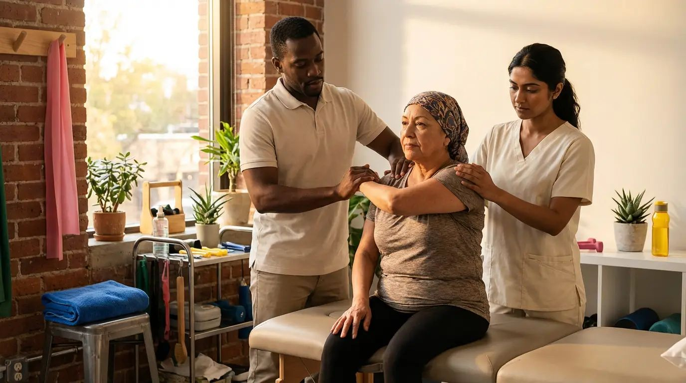

Improving the wellbeing of individuals diagnosed with cancer.
Contact UsOncology physiotherapy services are designed to support patients undergoing or recovering from cancer treatment, surgery, and long-term effects of illness. These services aim to manage symptoms, restore strength, and enhance quality of life during and after treatment.
Here are some key aspects of oncology physiotherapy services:
All services are tailored to the individual needs of each patient, ensuring a safe, gentle, and progressive rehabilitation process. Oncology physiotherapy plays a vital role in improving physical, emotional, and functional well-being throughout the cancer journey.
Beirut Advanced Physiotherapy Center’s oncology physiotherapy program supports individuals diagnosed with cancer and undergoing treatment. Our rehabilitation approach provides a structured treatment and exercise plan with the goal of reducing and managing treatment side effects while improving mobility, strength, and overall wellbeing.
This program is recommended for individuals who:
Our specialized team provides comprehensive oncology rehabilitation services in a supportive clinical environment. We combine evidence-based treatment techniques with individualized care plans to ensure safe, progressive recovery throughout every stage of treatment.
Appointments can be booked by phone or in person. If you prefer, you can also reach out through our Contact page and we’ll get back to you to confirm your visit.
Coverage depends on your specific insurance/extended medical plan. In many cases, oncology physiotherapy falls under physiotherapy benefits.
If you have coverage, we can provide a receipt for reimbursement. For more details, please contact us and we’ll guide you based on your plan.